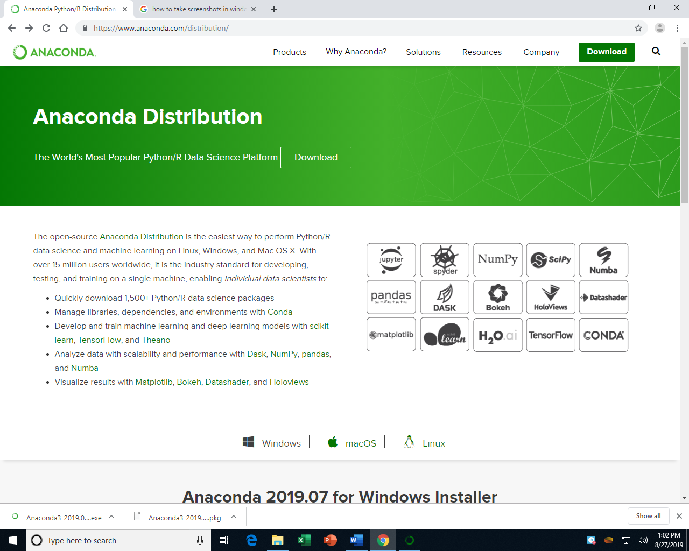
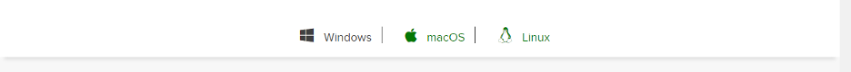
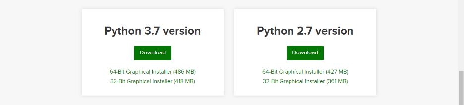
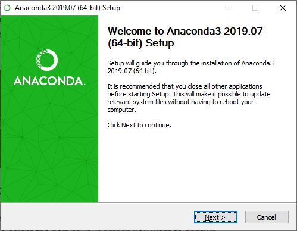

Anaconda Installation¶
Anaconda is a tool that installs Python together with the conda package
manager and several related apps, tools, and packages. It’s one of the
easiest ways to get Python installed on your system and ready to use for
data work.
These instructions are written primarily for Windows, with Mac instructions in parentheses.
Visit the Anaconda website¶
It is at this URL: www.anaconda.com/distribution
It looks like this:

Choose your OS¶
Scroll down on that same website and click the Windows link to indicate that you want to download the installer for Windows.

(Mac users obviously click the macOS link instead.)
Download the Installer¶
Click the download button for the Python 3.7 distribution of Anaconda, as shown on the left below.

Run the Installer¶
Run the installer once it’s downloaded, probably by clicking the downloaded file in your browser’s list of downloaded files, usually at the bottom left of the window.
(For Mac users, this will be a .pkg file instead of an .exe.)
Accept all the default choices during installation. This may take up to 10 minutes.

(For Mac users, the installer will look slightly different than the one above.)
After this, you may wish to install VS Code as well.